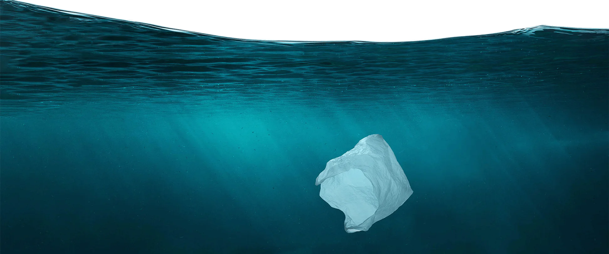

Stop using fossil fuels
How do fossil fuels affect marine life?
Fossil fuels can affect marine life in several ways, from exploration and extraction to their burning and emission of pollutants into the atmosphere
During oil exploration and extraction, for example, oil spills can occur, causing severe environmental damage and affecting marine fauna and flora. Contact with oil can lead to intoxication, asphyxiation, difficulty of movement, and other problems in animals, affecting their survival and the balance of the ecosystem.
Moreover, burning fossil fuels and the consequent emission of carbon dioxide into the atmosphere increase the acidity of the oceans, impairing the formation of shells and skeletons of marine organisms such as corals, mollusks, and crustaceans. Acidification can also affect the marine food chain, affecting the survival of fish and other animals that feed on these organisms.
Another problem is the rise in sea water temperature caused by global warming and greenhouse gas emissions, which can affect the migration, reproduction, and feeding of marine animals. For example, temperature rise can alter the distribution of fish species, affecting fishing and the subsistence of coastal communities
In summary, fossil fuels can affect marine life in several ways, impairing biodiversity, fishing, and the subsistence of coastal communities. Therefore, it is essential to seek more sustainable alternatives for energy generation and reduce dependence on these resources.

Hi, i'm Sea Turtle
i'm so adorable
Make a Symbolic Adoption
How can i help save the oceans?
What is marine litter?
Marine Litter is any persistent discarded solid material, manufactured or processed, disposed of, abandoned or lost
in the marine and coastal environment, including materials transported from land by rivers, drainage systems or
wastewater treatment systems or wind.
What are the impacts caused by marine litter?
It is recognized that anthropogenic waste and in particular plastics affect ecosystems and marine organisms.
Marine litter can impact in many ways, namely through: TRAPMENT and INGESTION, FACILITATION OF TRANSPORT,
PROVIDING A NEW HABIT FOR COLONIZATION, and effects on the structure of species communities.
Microplastics
The definition of MACRO WASTE as garbage larger than 25 mm is widely accepted among the scientific community,
with the term MICRO WASTE based on the definition of microplastic, as plastic particles smaller than 5 mm.
The variable dimensions range between 5 mm and 25 mm are designated as MESO TRASH.
Marine litter monitoring program on beaches in Portugal
The Portuguese Environment Agency, through the Hydrographic Region Administrations and in collaboration with some municipalities
(Alcobaça, Faro, Ílhavo, Lagos, Leiria, Ovar, Pombal, Póvoa do Varzim, Viana do Castelo, Vila Nova de Gaia and Torres Vedras),
captaincies and Blue Flag Association for Europe, coordinates since January 2013 the Marine Litter Monitoring Program on beaches in mainland Portugal.